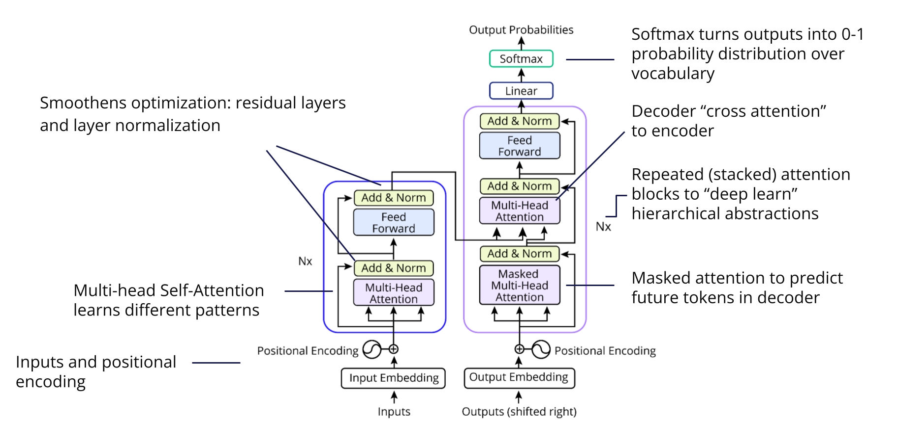
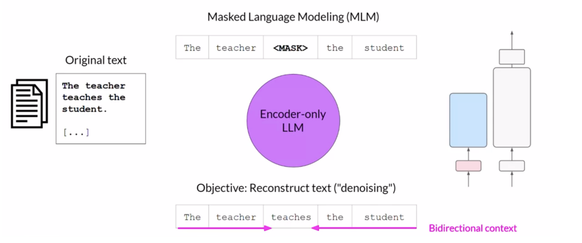
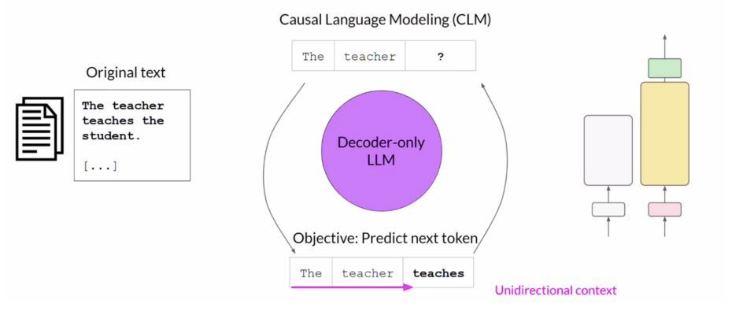
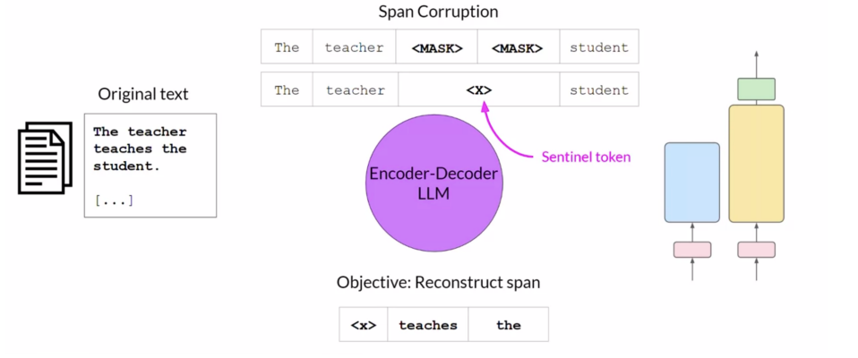

Introduction
Generative AI⚑
It is a subset of traditional ML. The ML algorithms that work behind generative AI do so by exploiting the statistical patterns present in the massive datasets of content that was originally generated by humans.
Terminology⚑
- Prompt: The input given to an LLM is called the prompt.
- Context Window: The space/memory that is available to the prompt is called the context window. It is essentially the maximum size of the prompt that the model can handle before it performs poorly. It is limited to a few thousand of words but also varies model to model.
- Completion: The output of the an LLM when given a prompt is called the completion. Generally, the completion consists of the prompt and the text generated by the model by repeatedly generating the next token or word, though almost all applications omit the prompt from the model’s output when showing it to users
LLMs⚑
Definition⚑
LLMs (Large Language Models) are generative AI models specifically designed to understand text. All LLMs are powered by the Transformer (Google, 2017) architecture. They are designed to take in input text and repeatedly generate the next token or word that appropriately “completes” the input text. For example, an LLM can be given the input: Where is Ganymede located in the solar system? In response, the LLM might generate the following output: Ganymede is a moon of Jupiter and is located in the solar system within Jupiter’s orbit. Here, the model essentially completed the given input by repeatedly generating the next word or token that fits appropriately. These models have abilities beyond just language and are capable of breaking down complex tasks, reasoning and problem solving. It is commonly accepted that as the size (in terms of number of parameters) of an LLM increases, so does its understanding of language. At the same time, it is also true the smaller models can be fine-tuned to perform well on specific tasks.
Foundation Model⚑
A foundation model is a powerful AI tool that can do many different things after being trained on lots of diverse data. These models are incredibly versatile and provide a solid base for creating various AI applications, like a strong foundation holds up different kind of buildings. By using a foundation model, we have a strong starting point for building specialized AI tasks.
Foundation Models (GPT, BERT) and Traditional Models (Linear regression, SVM) are two distinct approaches in the field of artificial intelligence with different strengths. Foundation Models, which are built on large, diverse datasets, have the incredible ability to adapt and perform well on many different tasks. In contrast, Traditional Models specialize in specific tasks by learning from smaller, focused datasets, making them more straightforward and efficient for targeted applications.
Pre-training Large Language Models⚑
Initial Training Process (Pre-training)⚑
The initial training process of an LLM is called as pre-training. LLMs work by learning a deep statistical representation of language and this deep representation is developed during pre-training. At a high-level, during pre-training, the model is fed large amounts of unstructured textual data, ranging from gigabytes to petabytes in size. The data is pulled from many sources such as web crawling and corpora of text compiled specifically to train LLMs. The pre-training process is self-supervised. The model internalizes the patterns and structures present in the language. These patterns then unable the model to complete its training objective, which depends on the architecture of the model. In other words, during pre-training, the model weights get updated to minimize the loss of training objective. Clearly, this step requires a lot of compute and the use of GPUs.
Additionally, since the data is coming from public sources such as the internet, there is often a data quality filter applied before feeding the data to the LLM so that the training data is of high quality, has low bias and does not have harmful content. Due to this, only about 1-3% of the original tokens are used for pre-training.
Training Objectives for Transformer Variants⚑
The three configurations of a Transformer are trained with different training objectives and thus, learn to perform different tasks.
Popular transformer-based models differ in not only architecture but also pre-training objectives.
- Autoregressive (AR): Predicting the next token using its own last output
- Denoising autoencoder: Predicting tokens based on the pretext that the data has been corrupted
- Contrastive: Aligning different inputs or views of the same input and constructing (positive, negative) pairs.
Some pre-training objectives are better than others for self-supervised learning; this depends on whether the ground truth can be constructed within the data structure, or whether it requires manual annotation.
Transformers⚑
In mid-2017, Google published Attention Is All You Need and introduced the Transformer model to the world. There are many wonderful works explaining the Transformer model, in particular the Illustrated Transformer (a wonderful introduction) and the Annotated Transformer (with a line-by-line implementation in Python).
Transformer architectures consist of building block of self-attention layers.
Keep in mind that the original transformer from Vaswani et al. (2017) had both an encoder and a decoder, but that newer transformer-based models often use just the encoder or just the decoder portion.

Encoder-only Models⚑
The first LLM to gain broad adoption was BERT (Bidirectional Encoder Representations from Transformers), an encoder-only model. Encoder-only models are most commonly used as base models for subsequent fine-tuning with a distinct objective, e.g. for the inference-time task of binary classification of movie reviews. (Mask some words)
The encoder-only variants of Transformers are also called autoencoding models. They are pre-trained using Masked Language Modeling (MLM). In MLM, tokens in the input sequence are randomly masked and the training objective is to predict the masked tokens in order to reconstruct the original input sequence. This is also called a denoising objective since the masking of the tokens can be thought of as adding noise to the input sequence and then predicting the masked tokens can be thought of as removing that noise from the input sequence. Autoencoding models build bidirectional context representations of the input sequence, meaning that model has an understanding of the full context of the token rather than just the tokens that come before it.

These models are usually suited to tasks that benefit from this bidirectional context such as sentiment analysis, named entity recognition and word classification, etc. Examples: BERT, ROBERTA.
BERT has a denoising autoencoder objective. Specifically, it uses masked language modeling.
This means that a fraction of the tokens are masked, and the task for the encoder is to predict those masked words.
BERT also optimizes for next sentence prediction. This is fairly different from a next token prediction—BERT is not generating the next sentence. It is performing a binary classification of whether or not the second sentence belongs after the first.
Decoder-only Models⚑
However, before BERT was released, the first GPT (Generative Pre-Trained Transformer) model, a decoder-only model, was released by OpenAI. Decoder-only models are most commonly used for the inference-time task of text generation. In distinction to encoder-only models, the Transformer's pre-training objective of next token prediction is very similar to the decoder-only model's inference-time task of text generation.
The decoder-only variants of Transformers are also called autoregressive models. They are pre-trained using Causal Language Modeling (CLM). In CLM, the training objective is to predict the next token based on the previous sequence of tokens. The tokens of the input sequence are masked and the model can only see the input tokens leading up to the token being predicted at the moment. The model has no knowledge of the tokens that come after this token. The model then iterates over the input sequence one-by-one to predict the next token. Thus, in contrast to autoencoding models, the model builds a unidirectional context for each token.

By learning to predict the next token from a vast number of examples, the model builds a statistical representation of the language. Predicting the next token is sometimes called full language modeling by researchers. These mode,ls are most suitable for text generation but large autoregressive models also show strong zero-shot inference ability and can perform a variety of tasks. Examples: GPT, BLOOM.
GPT has an autoregressive objective. It assumes that there is some kind of continuity or dependency between a value and its predecessors.
The attention scores for future tokens are set to negative infinity to prevent "cheating", and then the model proceeds to pick the highest probability candidate for the next token.
A technique called "teacher forcing"—that has been in use since the 1980s—can be used to prevent the model from accumulating mistakes and continuing on a vicious feedback loop during training.
Encoder-Decoder Models (Sequence-to-Sequence Models)⚑
Encoder-Decoder Models (Sequence-to-Sequence Models) The encoder-decoder variants of Transformers are also called sequence-tosequence models. The exact details of pre-training objective vary from model to model. For example, FLAN-T5 is trained using span corruption. In span corruption, a part of the input sequence is masked and replaced by a sentinel token. These sentinel tokens are special tokens added to the vocabulary that to do not correspond to any actual word from the dataset. The decoder then has to reconstruct the sentence autoregressively. The output is the sentinel token followed by the predicted tokens.

We can use such models for tasks such as translation, summarization and question answering. They are most useful where the input and output both are bodies of text. Examples: FLAN-T5, BART.
Attention Scores⚑
The attention calculation computes the similarity matrix between queries and keys \(QK^{T}\) then uses a softmax function to convert the scores into a probability distribution, which is multiplied by the values embeddings \(V\) to produce the output vector \(Z\)
Before applying the softmax function, \(QK^{T}\) is divided by \(\sqrt{d_{k}}\) (the square root of the dimension of \(K\)) in order to avoid tiny gradients at extreme values.
Attention scores describes the mathematical definition of attention. Attenntion mechanisms are about how mathematical operations are applied to different set of queries, kyes and values.
This creates the following complete formula for scaled multiplicative attention:
Types⚑
Multiplicative Attention (Dot-Product Attention)⚑
Multiplicative attention, also known as dot-product attention, calculates the attention scores by performing a dot product between the query and the key. It is a simple and efficient way to measure the similarity between the query and the key.
\(Attention(Q, K, V) = softmax(QK^{T})V\)
In this formula, \(Q\) represents the query matrix, \(K\) the key matrix, and \(V\) the value matrix. The attention scores are obtained by first calculating the dot product between \(Q\) and \(K^{T}\) (the transpose of \(K\)), followed by applying the softmax function to ensure the scores are normalized to sum up to 1.
Additive Attention⚑
Additive attention, also known as content-based attention, computes the attention scores by adding the query and the key together, usually followed by a non-linear activation function such as tanh, and then projecting the result through a learnable weight matrix to produce the scores.
\(Attention(Q, K, V) = softmax(W[(Q + K)^{T}])V\)
Here, \(W\) is a weight matrix that is learned during training. The addition of \(Q\) and \(K\) allows for a more flexible interaction between the query and the keys, potentially capturing more complex dependencies.
General Attention⚑
General attention is a variant of multiplicative attention where the similarity between the query and the key is calculated using a learnable weight matrix. This allows the model to learn an optimal way of computing attention scores.
\(Attention(Q, K, V) = softmax(QW_kK^{T})V\)
In this case, \(W_{k}\) is a learnable weight matrix that transforms the key before computing the dot product with the query. This adds an additional level of flexibility compared to the standard dot-product attention, as the model can learn the most effective way to compare queries and keys.
Each of these attention mechanisms provides a different way to calculate how much focus or "attention" should be given to different parts of the input when performing a task, allowing models to dynamically weigh the importance of different elements in the data.
Attention Mechanisms⚑
Attention scores describes the mathematical definition of attention. Attenntion mechanisms are about how mathematical operations are applied to different set of queries, kyes and values.
when some part of a neural network applies an attention score or mechanism to some information, you might think that the standard phrasing would be "A pays attention to B". Instead, we typically say that "A attends to B". This standard terminology is more concise and less anthropomorphizing.
Self-Attention⚑
This was the original attention mechanism described by Vaswani et al. (2017).
Each position in the sequence attends to all positions in the same sequence.
Self-attention has an interaction distance of \(O(1)\), which is a major improvement over the \(O(n)\) interaction distance of an RNN. The drawback is that it has \(O(n^2)\) computation.
Multi-Head Attention⚑
Multiple Q, K, V heads
Each head has its own set of weights, and attention is distributed, with each head focusing on a different specialized feature of the input.
Multi-Query Attention⚑
Multiple Q heads, 1 K, V head
Each query is distinct and shares the same key and value. Compared to multi-head attention, it is more efficient and can significantly increase the training batch size through parameter sharing.
Billion-parameter LLMs like Falcon and LLaMA 2 use multi-query attention.
Cross-Attention⚑
Q ≠ K, V
Used to "cross-reference" between different modalities or sequences. This mechanism is especially useful for tasks where different data types interact, e.g., image captioning.
Attention problems and solutions⚑
If self-attention is so powerful, can it replace RNNs altogether? Vaswani et al. (2017) argue that it can, with the right solutions in place to address its limitations.
-
Problem: lack of input order
- As previously described with ELMo, context is important for understanding the meaning of words.
- Self-attention doesn't understand this by default, so we add positional encodings as part of the input embeddings.
-
Problem: no nonlinearity between repeated self-attention layers
- The reason we typically use an activation function like ReLU in a neural network layer, rather than just a linear output, is to enable the model to capture more complexity. Linear outputs can be reduced to a simple \((y = mx + b)\) style formula.
- Self-attention layers don't have this nonlinearity by default, so we add a feed-forward network for each processed token afterward.
-
Problem: "cheating" when predicting a sequence
- The goal of a deep learning model is to be able to predict some unknown information given some known information. If all of the information is known, the model can't learn the relationships properly.
- By default, self-attention can look at all of the data, including the "future" that it is trying to predict. To prevent this, we mask attention on future words during decoding.
Positional Embeddings⚑
Because attention layers don't understand order by default, we encode the ordering of the tokens in an embedding. Algorithms for positional embeddings include:
-
Absolute positional embeddings:
- Sinusoidal (original)
- Learned (BERT, GPT)
-
Relative positional embeddings
- TransformerXL
-
Rotary positional embeddings
Residual Connections⚑
A residual connection is a type of skipped layer, designed to address the vanishing gradient problem. It originated from the 2015 ResNets paper by He et al. and was originally used for computer vision tasks.
Layer Normalization⚑
Layer normalization is the process of subtracting the mean and dividing by the standard deviation of the inputs for each sample. This stabilizes and speeds up the model training.
Similar to the scaled attention score described previously, this step is helpful because of how it impacts the gradients that neural networks use for backpropagation.
Prompting and Prompt Engineering⚑
We define a prompt as:
- \(X \rightarrow\) The user prompt, is like the features in ML.
- \(Y \rightarrow\) Masked (Next token)/Response(Next Token) Like Y label in ML.
- \(\theta \rightarrow\) Model weights
Prompting⚑
The text that is fed to LLMs as input is called the prompt and the act of providing the input is called prompting.
Prompt Engineering⚑
The process of tweaking the prompt provided to an LLM so that it gives the best possible result is called prompt engineering. Some common techniques are given below.
In-Context Learning (ICL)⚑
In ICL, we add examples of the task we are doing in the prompt. This adds more context for the model in the prompt, allowing the model to “learn” more about the task detailed in the prompt.
Zero-Shot Inference⚑
For example, we might be doing semantic classification using our LLM. In that case, a prompt could be:
This prompt works well with large LLMs but smaller LLMs might fail to follow the instruction due to their size and fewer number of features. This is also called zero-shot inference since our prompt has zero examples regarding what the model is expected to output.
Few-Shot Inference⚑
This is where ICL comes into play. By adding examples to the prompt, even a smaller LLM might be able to follow the instruction and figure out the correct output. An example of such a prompt is shown below. This is also called one-shot inference since we are providing a single example in the prompt:
Classify this review: I loved this movie!
Sentiment: Positive
Classify this review: I don’t like this chair.
Sentiment:
Here, we first provide an example to the model and then ask it to figure out the output for the I don’t like this chair review. Sometimes, a single example won’t be enough for the model, for example when the model is even smaller. We’d then add multiple examples in the prompt. This is called few-shot inference.
In other words:
- Larger models are good at zero-shot inference.
- For smaller models, we might need to add examples to the prompt, for few-shot inference.
Inference Configuration Parameters⚑
- Max New Tokens: This is used to limit the maximum number of new tokens that should be generated by the model in its output. The model might output fewer tokens (for example,it predicts
before reaching the limit) but not more than this number. - Greedy vs Random Sampling: Some models also give the user control over whether the model should use greedy or random sampling.
-
Sample Top-K and Sample Top-P: Sample Top-K and Sample Top-P are used to limit the random sampling of a model. A top-K value instructs the model to only consider K words with the highest probabilities in its random sampling. Consider the following softmax output:
If K = 3, the model will select one of cake, donut or banana. This allows the model to have variability while preventing the selection of some highly improbable words in its output. The top-P value instructs the model to only consider words with the highest probabilities such that their cumulative probability, p1 + p2 + · · · + pK ≤ P. For example, considering the above output, if we set P = 0.30, the model will only consider the words cake and donut since 0.20 + 0.10 ≤ 0.30.
-
Temperature: Temperature is also another parameter used to control random sampling. It determines the shape of the probability distribution that the model calculates for the next word. Intuitively, a higher temperature increases the randomness of the model while a lower temperature decreases the randomness of the model. This temperature is passed as a scaling factor to the final softmax layer of the decoder. If we pick a cooler temperature (T < 1), the probability distribution is strongly peaked. In other words, one (or a few more) words have very high probabilities while the rest of the words have very low probabilities:
Notice how cake has a 40% chance of being picked while other words have very small chances of being picked. The resulting text will be less random. On the other hand, if we pick a warmer temperature (T > 1), the probability distribution is broader, flatter and more evenly spread over the tokens:
```bash Probability Word 0.040 apple 0.080 banana 0.150 cake 0.120 donut . . . . . . ```Notice how none of the words have a clear advantage over the other words. The model generates text with a higher amount of randomness and has more variability in its output. Clearly, when T = 1, the model uses the softmax output as is for random sampling.
You can find more information in how the different decoders works Link
Virtuous Feedback Loops⚑
Setting aside the model weights, we can see how the LLM can enable virtuous feedback loops (as opposed to the vicious feedback loops seen earlier) by considering how the LLM can aid in the generation of helpful prompt context.
Recall for the prediction of \(Y\), given \(X\), \(P(Y|X)\), that the LLM generates each token in Y, one at a time, appending the previously generated token to \(X\). In the case of a prompt, \(n\) tokens long, and a complete prompt + LLM response \(k\) tokens long, then the tokens in \(X\) from \(n+1\) to \(k-1\) came from the LLM. This can be represented mathematically below:
\(P(Y_{n+1} | X_{0,1..n}) \rightarrow\) \(P(Y_{n+2} | X_{0,1..n+1}) \rightarrow\) \(P(Y_{n+3} | X_{0,1..n+2}) \rightarrow\) \(\dots \rightarrow P(Y_k | X_{0,1..k-1})\)
Techniques that guide the LLM toward generating assistive tokens at the start of the LLM response can aid in answering a question at the end of the prompt, effectively helping the LLM write its own features.
An example of a virtuous feedback loop is provided by “Chain of Thought”
Workflow to try prompts⚑
Data⚑
Most common sources⚑
Generating traing data with LLMs⚑
LLMs can be used for the generation of training data along multiple dimensions, including:
-
Generation of responses from pre-existing queries_
Enabling instruction fine-tuning dataset pairs:
This is probably the most straightforward usage of LLMs for synthetic dataset generation. Ensure LLM's license supports such usage.
-
Generation of instructions from pre-existing documents. Enabling instruction fine-tuning dataset pairs:
This method, known as back-translation from the development of translation systems for low-resource languages, has been given this modern spin in "Self-Alignment with Instruction Backtranslation"
-
Generation of preference data from existing prompt/response LLM pairs: For example, the comparison of:
vs.
This can be used for Reinforcement Learning from Human Feedback (despite the feedback being non-human in this case), as explored more in "Constitutional AI: Harmlessness from AI Feedback".
Resources⚑
- Explainable AI: Visualizing Attention in Transformers
- Illustrated Transformer (a wonderful introduction) and the
- Annotated Transformer (with a line-by-line implementation in Python).
- How decoder works
Created: 2024-10-23